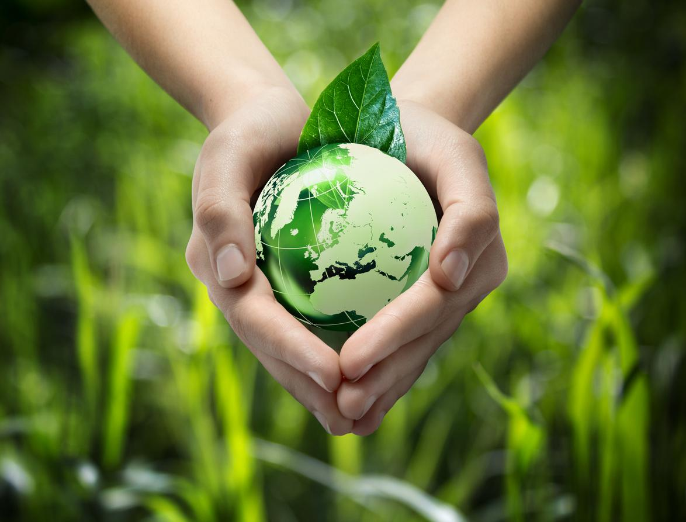

Recursos natruales
En las tierras de Cajamarca yacen una riqueza mineral sin igual, que abarca desde el preciado oro y la resplandeciente plata hasta el sólido cobre y el resistente hierro. La región es bendecida con vastas reservas de minerales como la caliza, el bronce y el zinc, fundamentales tanto en la construcción como en la industria metalúrgica. Pero no se detiene ahí, pues bajo su suelo reposan también recursos esenciales como el manganeso, el yeso y el caolín, cada uno desempeñando un papel crucial en diversas aplicaciones industriales y comerciales. Cajamarca no solo es conocida por su exuberante naturaleza, sino también por sus abundantes y variados recursos minerales, que han sido parte integral de su historia y economía desde tiempos inmemoriales.
 |
Climas
En Cajamarca, ubicada en el hemisferio sur, el clima exhibe una marcada estacionalidad. De diciembre a marzo, durante el verano austral, prevalece un clima lluvioso, generando un paisaje verde y exuberante. Por otro lado, de mayo a septiembre, correspondiente al otoño e invierno austral, la región experimenta una estación seca, con días soleados y templados pero noches frías. Esta alternancia entre estaciones influye en la vida vegetal, animal y humana, dando lugar a una diversidad de actividades agrícolas, turísticas y recreativas a lo largo del año.
|
Relacion del hombre con su medio
En Cajamarca, la conexión entre las personas y su entorno geográfico se manifiesta principalmente a través de la agricultura, arraigada en su cosmovisión andina que considera a todos los elementos del ecosistema como seres vivos. Los agricultores trabajan la tierra con reverencia, cultivando principalmente grano seco y trigo, pero también aprovechando el clima propicio en el sur de Cajamarca para exportar productos frutales de alta calidad como mango, palta y chirimoya. Además, la explotación de minerales juega un papel significativo en la economía del departamento, contribuyendo a mejorar la calidad de vida de sus habitantes. Esta combinación de actividades agrícolas y mineras refleja la interdependencia entre la comunidad y su entorno, donde el respeto por la naturaleza y la búsqueda de prosperidad económica van de la mano.
 |
Uso de los recursos por el gobierno regional
Durante estos años, el gobierno de Cajamarca ha desplegado una gestión integral de sus recursos naturales, abarcando tanto minerales como animales y flora. Ha establecido seis zonas nacionales protegidas, como el Parque Nacional de Cutervo desde 1967, en respuesta a la caza indiscriminada y la deforestación. Además, aprovechando sus recursos minerales, incluyendo oro, cobre, plata y caliza, Cajamarca se ha convertido en un pilar crucial de la economía peruana, gestionando estos activos de manera sostenible para evitar la sobreexplotación y preservar sus biomas. Esta combinación de conservación y aprovechamiento responsable ha contribuido a mantener el equilibrio ambiental y el desarrollo económico de la región.
|
Zonas protegidas
Los Bosques del Chaupe, Cuniea y Chinchiquilla se extienden a lo largo de 21,868 hectáreas y están situados en la imponente Cordillera Real Oriental, ofreciendo un hábitat vital para numerosas especies. En estos bosques se puede encontrar una rica biodiversidad, enriquecida por la variada topografía y las condiciones climáticas. Además, los páramos y bosques montanos de Jaén y Tabaconas están especialmente protegidos debido a la presencia de especies emblemáticas y amenazadas como el tapir andino y el oso de anteojos. Por otro lado, los Bosques Secos del Arañón juegan un papel crucial en la conservación, al albergar especies únicas de plantas adaptadas a este entorno específico.
|
Peligros y vulneravilidad del territorio
Los bosques mencionados, como los de Bosques del Chaupe, Cuniea y Chinchiquilla, así como los páramos y bosques montanos de Jaén y Tabaconas, enfrentan diversos peligros y vulnerabilidades. Entre ellos se destacan la deforestación ilegal, la actividad minera informal, y la presión por la expansión agrícola y ganadera. Estos factores amenazan no solo la biodiversidad única del área, que incluye especies como el tapir andino y el oso de anteojos, sino también los servicios ecosistémicos cruciales que proporcionan estos ecosistemas, como la regulación hídrica y el almacenamiento de carbono. La gestión adecuada y la protección efectiva de estos territorios son esenciales para mitigar estos riesgos y garantizar su conservación a largo plazo.
|